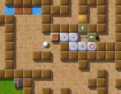

Уровень МесяцаМы хотим каждый месяц больше внимания уделять превосходным уровням. Превосходные уровни это те, у которых средняя оценка пользователей наивысшая и в целом много оценок. Следовательно это Ваш выбор. Поэтому пожалуйста оценивайте уровни, на которых Вы играете и не забывайте присылать Ваши оценки вместе с результатами в конце каждого месяца. Вы можете найти все предыдущие уровни месяца в нашем архиве. Июнь 2007: «Labyrinth of Puzzles» от Jacob ScottЗдесь кто-то считает, что старые уровни ни на что не годятся? В этом месяце мы посетим один из классических уровней Enigma, на который непосредственно повлиял Oxyd. Написанный самым продуктивным из всех авторов уровней Enigma, превзойденный только самим Meinolf Schneider. Кульминация ранних уровней Jacob'а: не заблудитесь в «Labyrinth of Puzzles»! 
Enigma IV # 19
На самом деле, я уже ожидал, что «Labyrinth of Puzzles» станет Уровнем Мая 2007 -- но, он был вытеснен вновь прибывшим «The Aztec Temple». «Labyrinth of Puzzles» получил 7 голосов, в среднем 9.00 баллов, в то время как «The Aztec Temple» был оценен всего 3 игроками. В нашем разделе архива мы можем сравнить все предыдущие Уровни Месяца с их текущим положением -- в следующие месяцы будет происходить эффектная гонка между новоприбывшим и классическим уровнями! «duffy - твой дьявольски приближающийся крах (оригинал - "diabolically unfolding frustration for you")»ник/имя файла(ов) очевидно выбраны не случайно. Я имею в виду, что мы говорим о человеке, который написал такие дьявольские уровни, что одна мысль о них приводит меня в ужас. island of safety, the alien glyph trilogy, the document, security guards, bad nightmare, worse nightmare, double-spiral и, конечно, незабываемый labyrinth of puzzles. [Интересный список … ты забыл «Seed Puzzles»! ;-] Этот человек заставил меня сидеть уставившись в экран, часами думая о том как справиться с его злорадными уровнями. Я ненавижу duffy! Я ненавижу его за создание самых злорадных уровней, которые я встречал в Enigma. … в то же время я еще и люблю duffy! Я люблю его по той же причине. duffy многими своими уровнями вдохновил меня на попытки создания своих собственных уровней. Я помню, что когда впервые увидел labyrinth of puzzles я подумал про себя 'это должно быть просто и займет максимум 5 минут' … это было до того, как я столкнулся с первой проблемой с переключателем в воде и невозможности так просто до него добраться … это продолжалось на протяжении всего уровня. Вы начинаете что-то делать и останавливаетесь, потому что не можете найти последний недостающий фрагмент головоломки. Это приводит к краху. duffy реализовал очень много вещей, которые показали мне, как можно сделать уровень кажущийся простым, а потом превращающийся в настоящий кошмар. Я знаю, что сам никогда не напишу такие уровни как этот и это заставляет меня задуматься, что твориться в его мыслях. Как Вы можете в голубом аду спланировать уровень, который заставит пользователя рыдать с самого начала ? … чтобы осмыслить все это потребуется неделя или больше. Пусть даже labyrinth of puzzles возможно и один из старейших уровней duffy, я все еще считаю, что СЕГОДНЯ найдется не так много людей, которые напишут такой же волнующий и толковый уровень как labyrinth of puzzles. Это нестареющая классика с подходящим названием. Меня удивило, что в нем одном совмещены около двух самодостаточных уровней. У белого шарика, как и у черного, свой мир и задачи. Даже сейчас он остается запутанным и очень сложным уровнем. Единственная вещь, о которой я думаю: почему он оставил половину уровня пустой?. Держу пари, если бы у него было больше времени, то пустая часть тоже бы заполнилась загадочными вещами. Спасибо duffy и пожалуйста продолжай делать уровни, которые 'подхлестывают' игроков. Твои уровни оказывают, оказывали и всегда будут оказывать большое влияние на меня и мои собственные эксперименты. «Labyrinth of Puzzles» - один из немногих родных уровней Enigma, использующих режим совместимости с Oxyd. То есть: некоторые механизмы действуют не так, как обычно в Enigma, а скорее как в одной из старых игр Oxyd. Вы абсолютно ясно ощущаете это, когда открываете ключом замок -- в «Labyrinth of Puzzles» в Вашем инвентаре и в дальнейшем будет оставаться ключ. Jacob не случайно выбрал этот режим. Более того, одна из его головоломок завязана на этом особом режиме, который может показаться незнакомым менее опытным игрокам. Попробуйте «Seed Puzzle II» и «Ice-Bomb», если Вы не поняли о чем я. «Это был один из первых 'крепких орешков', который я попытался решить»Ниже приведено несколько комментариев наших игроков: 'Labyrinth of Puzzles' один из самых забавных уровней Enigma и абсолютно достоин быть представленным здесь. Когда я впервые просматривал Enigma, которая поставлялась с установленной мною версией Linux, я сразу начал играть и она очень мне понравилась. Несколько лет спустя я нашел черно-белую версию Oxyd, которая мне очень нравилась, но Enigma намного лучше ее. Наверное мне нравится этот уровень, потому что это был один из первых 'крепких орешков', который я попытался решить. Из-за того, что я был не так искусен в Enigma, это был для меня 'один из тех сложных уровней, которые я в любом случае никогда не решу'. Фактически я добрался достаточно далеко, потому что этот уровень не такой уж и сложный и точно проще остальных уровней месяца. Простым его делает то, что головоломки не могут быть очень легко 'разрушены' из-за неверного шага. Это делает его хорошим тренировочным уровнем для игроков, которые хотят взяться за более сложные уровни этой великой игры, которые к тому же очень интересны, такие как 'Island Labyrinth' или 'Aztec Temple'. Продолжай в том же духе, Jacob! Из всех уровней, которые подарил нам Jacob, «Labyrinth of Puzzles» несомненно один из моих любимых. Не смотря на то, что дизайн и игровой процесс очень напоминают «Island Labyrinth», здесь можно найти много собственных идей. Мне особенно понравилась командная игра двух шариков в «Labyrinth of Puzzles». В определенные моменты черный шарик зависит от белого и наоборот. Однако, не так заметно когда и как может помочь второй шарик (как и во многих других уровнях). В добавок, сложность оценена абсолютно верно. Здесь не развенчиваются сцены «начните все сначала», но каждый шарик может решить следующую головоломку после другого и очень долго оставаться занятым. В общем я хочу сказать, что есть уровни наподобие «Labyrinth of Puzzles», которые заставляют меня играть в Enigma. Большое спасибо за этот великий уровень, Jacob! Я еще не закончила Labyrinth of Puzzles, но это мой любимый тип уровней, потому что он требует, чтобы я сделала много различных вещей, чтобы завершить его. Я обожаю все разновидности уровней инь-янь. Я не люблю думать над передвижением камней и на этом уровне их очень мало, зато есть приятные головоломки поменьше. Благодаря большим уровням, как этот и Island Labyrinth, я научилась делать скриншоты (на форуме конечно же!) и объединять их в единую карту, чтобы изучать шаги, которые я делаю. Пара друзей, наподобие жуткого ротора и ликов смерти, лучше головоломок, но я предпочитаю их роторам, хоть быстрым, хоть медленным. «Я сложил все, что знал в единое приключение»Между «Labyrinth of Puzzles» и «Double-Spiral» есть значительные сходства: illmind уже упоминал об этом. В них есть два редко используемых в уровнях шаблона it-brush вместе с fl-space, ключами и дисками; и более важное свойство: в обоих уровнях белый и черный шарик появляются в разных местах и должны встретиться. Если Вы внимательно прочтете пояснение Jacob'а, то поймете почему:

Одна из многих головоломок
«Labyrinth of Puzzles» был только 35-ым уровнем, который я отправил и скорее моя вторая попытка сделать уровень-лабиринт. Меня вдохновили гигантские и разнообразные лабиринты старых игр Oxyd -- я помню как исследовал их множество часов, увлеченный всеми их маленькими ловушками. Когда я четыре или пять лет назад узнал об Enigma, я был восхищен, невероятно рад тому, что наконец смогу снова поиграть в Oxyd, но я заметил недостаток больших, сложных уровней. Вскоре после того, как я начал играть в Enigma я стал писать уровни, сначала чересчур непродуманные (я вручную расставлял объекты по координатам -- не очень хорошая стратегия для создания уровней более-менее значительных размеров), но все больше и больше совершенствуя свою технику на пути к написанию уровня похожему по стилю на монструозные, заполненные головоломками лабиринты, заворожившие меня в очень раннем возрасте. Моя первая попытка с уровнями такого типа вылилась в изрезанный стенами уровень с четкими различиями между его частями и всего одним действующим лицом (выпущенная, немного отредактированная, как «Pleasure Garden»), поэтому для «Labyrinth of Puzzles» я выбрал другой путь: очень мало четких частей, два шарика, чтобы повысить сложность, и ключи/дискеты/монеты к воротам, связывающим уровень воедино. Теперь, когда я оглядываюсь на него после создания многих уровней, «Labyrinth of Puzzles» кажется слишком простым, но я все же думаю увлекательным. В нем есть головоломки различных видов и размеров, но ни одна из них не представляет собой нечто экстраординарное, доставляющее каждому удовольствие при прохождении или даже повторном прохождении. Как видно по причудливым границам уровня, я намеренно немного удлинил уровень, но когда я дошел до самого низа уровня, я не нашел элегантного способа расширить лабиринт и у меня осталось чувство необходимости продолжения, которое преследовало меня повсюду. Это действительно одна из моих первых серьезных потуг в роли дизайнера уровней с множеством моих ранних творений, направленных на изучение одного или двух понятий Enigma. Тогда я не знал, того, что знаю теперь, такого как поведение более продвинутых предметов или как запрограммировать действия, которые не совпадают с распространенным шаблоном, но я сложил все, что знал в единое приключение -- то, что я очень рекомендую всем новым авторам уровней, ведь это дает понимание абсолютно разных типов уровней. С тех пор я написал новые сложные уровни, немного расширив эту идею, но я всегда с удовольствием возвращаюсь к «Labyrinth of Puzzles» -- хотя он кажется довольно простым, я верю, что это добротный уровень и в нем сочетаются различные типы уровней, в которые можно поиграть. Это несомненно так! «Pleasure Garden», кстати, недавно был выпущен в Enigma 1.01 под номером VI/95, и я уверен, что каждый, кому нравится «Labyrinth of Puzzles» будет рад его увидеть и поиграть. На этом и множестве новых уровней от Jacob'а, таких как «Temple of Gold» (VII/24)! Еще кое-что: сегодня я хочу поблагодарить Taztunes за то, что он один проверил все УМы, начиная с марта; большое спасибо, Taztunes! С уважением, |